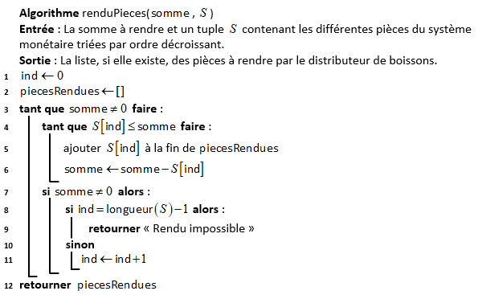

Présentation du code. Modularité.
Validation d'un programme
Validation d'un programme
Présentation du code
PEP ? Vous avez dit PEP ?
PEP est un acronyme pour Python Enhancement Proposals, Propositions d'Amélioration Python.
Les PEP sont des propositions d’amélioration du code python qui permettent une meilleure lecture, compréhension, fonctionnement etc…. Ce n’est pas obligatoire mais cela permet de rendre le code plus lisible et plus compréhensible.
La PEP8
La PEP8 définit un guide de style de codage. Elle consiste à rendre le texte plus lisible.
Voici les principales recommandations de ce guide :
- Utiliser des indentations avec la touche Tab et non la touche Space.
- Limiter les lignes à 79 caractères, cela évitera d’avoir à défiler la fenêtre.
- Ne pas casser une ligne avant une opération.
- Ne pas laisser de ligne vide avec une espace à l'intérieur.
- Ne pas finir une ligne par une espace.
- Finir votre code par un retour à la ligne vide.
- Faire un import par module et non un import puis tous les modules.
- Eviter de mettre trop d’espaces, une espace suffit après une virgule.
- Mettre une espace entre les caractères opérationnels (
+,-,*,/,:). - Mettre une espace avant et après un
=. - Ne pas séparer un caractère opérationnel et un
=(+=et non+ =). - Ne pas mettre une espace avant et après un
=si il sert à indiquer un argument ou paramètre. - Mettre à jour les commentaires afin qu’ils ne soient pas en contradiction avec le code.
- Eviter les commentaires inutiles et évidents (ex :
x += 1 # Incrémentation de x par 1).
Il existe plusieurs moyens de vérifier si un code Python vérifie les recommandations de la PEP8. On peut citer :
- La bibliothèque Pylint
- Certains IDE (Integrated Development Environment) comme PyCharm permettent de vérifier directement la cohérence d'un code Python avec la PEP8.
- Le site en ligne : {code:WOF}
Exercice 1
On donne le code Python ci-dessous :
Code
from random import *
def ma_fonction(n):
if n < 2:
return False
fact = 2
while fact * fact <= n:
if n % fact == 0:
return False
else:
fact += 1
return True
for loop in range(100):
n = randint(1, 100000)
print(n, ma_fonction(n))
- Etudier ce code source et décrire ce que renvoie la fonction
ma_fonction(n). - Tester si ce code vérifie les recommandations de la PEP8 à partir du site en ligne : {code:WOF}
- Donner le code modifié de telle sorte que les recommandations de la PEP8 soient respectées.
Nommer les arguments de la fonction lors de l'appel
On peut préciser le nom des arguments dans l'appel de la fonction pour être plus explicite, on parle alors de keyword arguments : "arguments nommés".
Code
# On définit la fonction
def energie_cinetique(m, v):
return 0.5 * m * v**2
# On appelle la fonction pour un objet de 2 kg ayant une vitesse de 3 m/s
print(energie_cinetique(m=2, v=3))
On obtient alors dans la console : 9.0
L'avantage est qu'en plus d'être plus explicite, on peut alors appeler les arguments dans un ordre quelconque ce qui n'est pas le cas lorsque l'on ne nomme pas les arguments (ce type d'arguments est appelé positionnal argument : "argument positionnel")
Ainsi,
energie_cinetique(v=3, m=2)
donne le même résultat dans la console : 9.0
Créer des fonctions acceptant un nombre variable d’arguments
Dans l'exemple précédent, que les arguments soient nommés ou pas, il est obligatoire de passer exactement 2 arguments à la fonction energie_cinetique() pour qu'elle fonctionne.
Ainsi, s'il manque un argument, Python lèvera une erreur à l'appel de la fonction, que l'argument restant soit nommé ou non :
>>> energie_cinetique(2)
Traceback (most recent call last):
File "<console>", line 1, in <module>
TypeError: energie_cinetique() missing 1 required positional argument: 'v'
>>> energie_cinetique(v=2)
Traceback (most recent call last):
File "<console>", line 1, in <module>
TypeError: energie_cinetique() missing 1 required positional argument: 'm'
Dans certaines situations, nous voudrons créer des fonctions plus flexibles qui pourront accepter un nombre variable d’arguments. Cela peut être utile si on souhaite créer une fonction de calcul de somme par exemple qui devra additionner les différents arguments passés sans limite sur le nombre d’arguments et sans qu’on sache à priori combien de valeurs vont être additionnées. En Python, il existe deux façons différentes de créer des fonctions qui acceptent un nombre variable d’arguments. On peut :
- Définir des valeurs de paramètres par défaut lors de la définition d’une fonction ;
- Utiliser une syntaxe particulière permettant de passer un nombre arbitraire d’arguments.
Préciser des valeurs par défaut pour les paramètres d’une fonction
On va déjà pouvoir préciser des valeurs par défaut pour nos paramètres. Comme leur nom l’indique, ces valeurs seront utilisées par défaut lors d’un appel à la fonction si aucun argument n’est passé à la place. Utiliser des valeurs par défaut pour les paramètres de fonctions permet donc aux utilisateurs d’appeler cette fonction en omettant de passer les arguments relatifs aux paramètres possédant des valeurs par défaut. On va pouvoir définir des fonctions avec des paramètres sans valeur et des paramètres avec des valeurs par défaut. Attention cependant : vous devez bien comprendre qu’ici, si on omet de passer des valeurs lors de l’appel à la fonction, Python n’a aucun moyen de savoir quel argument est manquant. Si 1, 2, etc. arguments sont passés, ils correspondront de facto au premier, aux premier et deuxième, etc. paramètres de la définition de fonction. Pour cette raison, on placera toujours les paramètres sans valeur par défaut au début et ceux avec valeurs par défaut à la fin afin que le ou les arguments passés remplacent en priorité les paramètres sans valeur.
>>> def presentation(prenom, age=18, nat="Français"):
... print("Je m'appelle", prenom, ", j'ai au moins", age, "ans et je suis probablement", nat)
...
...
>>> presentation("Pierre")
Je m'appelle Pierre , j'ai au moins 18 ans et je suis probablement Français
>>> presentation("Pierre", 29)
Je m'appelle Pierre , j'ai au moins 29 ans et je suis probablement Français
>>> presentation("Pierre", 29, "Belge")
Je m'appelle Pierre , j'ai au moins 29 ans et je suis probablement Belge
Si on souhaite s’assurer que les valeurs passées à une fonction vont bien correspondre à tel ou tel paramètre, on peut passer à nos fonctions des arguments nommés.
Passer un nombre arbitraire d’arguments avec *args et **kwargs
La syntaxe *args (remplacez args par ce que vous voulez) permet d’indiquer lors de la définition d’une fonction que notre fonction peut accepter un nombre variable d’arguments. Ces arguments sont intégrés dans un tuple. On va pouvoir préciser 0, 1 ou plusieurs paramètres classiques dans la définition de la fonction avant la partie variable.
>>> def somme(*args):
... s = 0
... for n in args:
... s += n
... print("Somme :", s)
... return None
...
...
>>> somme(1, 2)
Somme : 3
>>> somme(1, 2, 3, 4)
Somme : 10
>>> somme(30, 100, 2)
Somme : 132
Ici, on utilise une boucle for pour itérer parmi les arguments : tant que des valeurs sont trouvées, elles sont ajoutées à la valeur de s. Dès qu’on arrive à court d’arguments, on print() le résultat.
De façon alternative, la syntaxe **kwargs (remplacez kwargs par ce que vous voulez) permet également d’indiquer que notre fonction peut recevoir un nombre variable d’arguments mais cette fois-ci les arguments devront être passés sous la forme d’un dictionnaire Python.
>>> def presentation(**kwargs):
... for i, j in kwargs.items():
... print(i, j)
... return None
...
...
>>> presentation(prenom="Pierre", age=29, sport="trail")
prenom Pierre
age 29
sport trail
Prototyper une fonction
Pour expliquer le fonctionnement d'une fonction, on lui ajoute un prototype juste sous la ligne de définition. En Python, les prototypes sont appelés docstrings. On peut y accéder dans le code source ou simplement en utilisant la fonction help().
Le prototype doit décrire le rôle de la fonction, le type des paramètres et le type de la valeur de retour.
Code
def ajout(a, b):
"""La somme de deux nombres.
Renvoie la somme des deux nombres donnés en argument
Parameters
----------
a : int ou float
première valeur à ajouter
b : int ou float
deuxième valeur à ajouter
Returns
-------
int or float
La somme des deux arguments de la fonction
"""
return a + b
Exercice 2
Vérifier, qu'en tapant help(ajout), on obtient bien toutes les informations utiles pour manipuler la fonction.
Exercice 3
Ecrire le code d'une fonction Python nommée liste_diviseurs_entier(n) qui :
- Détermine et renvoie la liste des diviseurs de l'entier
npassé en argument. - Respecte les recommandations de la PEP8.
- Est documentée en utilisant les docstrings.
Annotations et signature
Le type des éventuels paramètres d'une fonction et celui de son retour peut être décrit dès le début de la fonction et non dans la docstring.
Annotations
Commençons par les annotations. Il se peut que vous ne les ayez jamais rencontrées, il s’agit d’une fonctionnalité relativement nouvelle du langage. Les annotations sont donc des informations de types que l’on peut ajouter sur les paramètres et le retour d’une fonction.
Nous avons destiné la fonction précédente à des calculs numériques, mais nous pourrions aussi pu l’appeler avec des chaînes de caractères. Les annotations vont nous permettre de préciser le type des paramètres attendus, et le type de la valeur de retour.
def addition(a:int, b:int) -> int:
return a + b
Leur définition est assez simple : pour annoter un paramètre, on le fait suivre d’un : et on ajoute le type attendu. Pour annoter le retour de la fonction, on ajoute -> puis le type derrière la liste des paramètres.
Attention cependant, les annotations ne sont là qu’à titre indicatif. Rien n’empêche de continuer à appeler notre fonction avec des chaînes de caractères.
À ce titre, on notera aussi que donner des types comme annotations n’est qu’une convention. Annoter des paramètres avec des chaînes de caractères ne provoquera pas d’erreur par exemple.
Nous avons défini une fonction addition opérant sur deux nombres, mais l’avons annotée comme ne pouvant recevoir que des nombres entiers (int).
En effet, les annotations utilisées jusqu’ici étaient plutôt simples. Mais elles peuvent accueillir des expressions plus complexes.
Le module typing nous présente une collection de classes pour composer des types. Ce module a été introduit dans Python 3.5, et n’est donc pas disponible dans les versions précédentes du langage.
Dans notre fonction addition, nous voudrions en fait que les int, float et complex soient admis. Nous pouvons pour cela utiliser le type Union du module typing. Il nous permet de définir un ensemble de types valides pour nos paramètres, et s’utilise comme suit.
from typing import Union
Number = Union[int, float, complex]
def addition(a:Number, b:Number) -> Number:
return a + b
Nous définissons premièrement un type Number comme l’ensemble des types int, float et complex via la syntaxe Union[...]. Puis nous utilisons notre nouveau type Number au sein de nos annotations.
Signatures
La signature est l’ensemble des paramètres (avec leurs noms, positions, valeurs par défaut et annotations), ainsi que l’annotation de retour d’une fonction. C’est-à-dire toutes les informations décrites à droite du nom de fonction lors d’une définition.
Par exemple :
def function(a:int, b:int, c=None, d:int=0, g:float, h:int, i:str='foo', j:float=5.0) -> bool:
pass
Modularité
Jusqu'à maintenant, nous avons toujours programmé au sein d'un seul fichier (ou script). Cependant, lorsqu'on souhaite rédiger des programmes plus longs, il est souhaitable de séparer le code dans plusieurs fichiers. Chaque fichier est appelé un module et les définitions d'un module peuvent être importées dans un autre module grâce au mot-clé import.
Utilisation des modules
Nous avons déjà utilisé des modules, car ceux-ci font partie intégrante de Python : c'est la cas par exemple des modules math ou random.
Dans cet exemple, nous allons utiliser le module statistics qui est moins connu et qui a été ajouté à Python à partir de la version 3.4.
Code
# import du module
import statistics
# affiche l'aide
help(statistics)
Supposons que l'on souhaite utiliser les fonctions mean() : moyenne et stdev() : écart-type. Plusieurs solutions s'offrent à nous:
- Import du module et utilisation de son espace de noms avec une notation pointée (avec un point entre le nom du module et le nom de la fonction).
Exemple
import statistics
notes = [11, 14, 18, 5, 12, 13, 15]
print(f"Moyenne : {statistics.mean(notes)}")
print(f"ÉcartType : {statistics.stdev(notes)}")
>>> (executing file "test.py")
Moyenne : 12.571428571428571
ÉcartType : 4.035556254807296
On peut aussi renommer l'import avec le mot-clé as pour rendre le code plus lisible.
Exemple
import statistics as stat
notes = [11, 14, 18, 5, 12, 13, 15]
print(f"Moyenne : {stat.mean(notes)}")
print(f"ÉcartType : {stat.stdev(notes)}")
>>> (executing file "test.py")
Moyenne : 12.571428571428571
ÉcartType : 4.035556254807296
- On peut également n'importer que les fonctions dont on a besoin.
Exemple
from statistics import mean, stdev
notes = [11, 14, 18, 5, 12, 13, 15]
print("Moyenne :", mean(notes))
print("ÉcartType :", stdev(notes))
>>> (executing file "test.py")
Moyenne : 12.571428571428571
ÉcartType : 4.035556254807296
- Une autre méthode cependant déconseillée en raison de la pollution de l'espace des noms (de variables) est l'utilisation du
*(wildcard, joker en anglais).
Exemple
from statistics import *
# Toutes les objets du module sont disponibles sans notation pointée
notes = [11, 14, 18, 5, 12, 13, 15]
print("Moyenne :", mean(notes))
print("ÉcartType :", stdev(notes))
>>> (executing file "test.py")
Moyenne : 12.571428571428571
ÉcartType : 4.035556254807296
Notre premier module
Nous allons créer un premier module dans un fichier fibo.py.
Code
# Module sur les nombres de Fibonacci
def fib(n): # affiche les nombres de Fibonacci jusqu'à n
a, b = 0, 1
while a < n:
print(a, end=' ')
a, b = b, a + b
print()
return None
def fib2(n): # renvoie la liste des nombres de Fibonacci jusqu'à n
result = []
a, b = 0, 1
while a < n:
result.append(a)
a, b = b, a + b
return result
Ensuite, dans un second fichier nommé test_import_module.py, nous allons importer le module fibo.
Remarque
Les deux fichiers doivent être situés dans le même environnement de travail (autrement dit le même dossier). Il faut aussi le spécifier dans Pyzo (menu Exécuter puis Démarrer le script dans le fichier test_import_module.py)
On peut alors importer le module et utiliser les fonctions qui y sont définies :
- Soit en important le module directement et en utilisant des notations pointées :
Code
import fibo
fibo.fib(1000)
# affiche 0 1 1 2 3 5 8 13 21 34 55 89 144 233 377 610 987
fibo.fib2(100)
# renvoie [0, 1, 1, 2, 3, 5, 8, 13, 21, 34, 55, 89]
- Soit en important spécifiquement des fonctions pour pouvoir les utiliser sans rappeler le module d'origine.
Code
from fibo import fib, fib2
fib(1000)
# affiche 0 1 1 2 3 5 8 13 21 34 55 89 144 233 377 610 987
fib2(100)
# renvoie [0, 1, 1, 2, 3, 5, 8, 13, 21, 34, 55, 89]
Documenter un module
Pour documenter un module il suffit encore une fois de créer la docstring au début du fichier en utilisant les chaines de caractères multi-lignes délimitées par """. Et pour une lecture aisée on limite souvent le nombre de caractères par ligne à 80 (ou 100 suivant les projets).
Si on reprend l'exemple précédent, on pourrait le documenter avec une description générale au début du module ainsi qu'une liste des fonctions, et en pensant à documenter également les fonctions bien sûr.
Les fonctions ont également été renommées pour être plus explicites:
fib:fib_printfib2:fib_to_array
Code
""" Module fibo relatif à la création de nombres de Fibonacci
Pour rappel, la suite de Fibonacci est une suite d'entiers dans laquelle chaque terme est la somme
des deux termes qui le précèdent.(voir: https://fr.wikipedia.org/wiki/Suite_de_Fibonacci)
Ce module présente deux fonctions:
- fib_print: affiche les nombres de Fibonacci
- fib_to_array: renvoie la liste des nombres de Fibonacci
"""
def fib_print(n):
"""Affiche les nombres de Fibonacci
paramètres
---------
n: int
dernier rang de la suite de Fibonacci affichée
"""
a, b = 0, 1
while a < n:
print(a, end=' ')
a, b = b, a + b
print()
return None
def fib_to_array(n):
"""Renvoie la liste des nombres de Fibonacci
paramètres
---------
n: int
dernier rang de la suite de Fibonacci renvoyée dans la liste
Returns
-------
list
La liste des nombres de Fibonacci jusqu'au rang n
"""
result = []
a, b = 0, 1
while a < n:
result.append(a)
a, b = b, a + b
return result
Exercice 4
Vérifier que dans le fichier test_import_module.py, après avoir importé le module fibo, en tapant help(fibo) dans la console, on obtient bien toutes les informations utiles pour manipuler ce module.
API (Application Programming Interface)
Lorsqu'un projet grandit, il y a de plus en plus de personnes qui doivent travailler dessus et l'utiliser et il devient de plus en plus complexe à comprendre. C'est pour cela qu'une bonne documentation est indispensable, mais aussi une bonne organisation du code afin de le rendre plus facile à utiliser.
Il conviendra de bien organiser les divers modules et fonctions accessibles, ce qu'on appelle l'API.
On peut prendre l'exemple de la bibliothèque open-source sklearn connue pour la qualité de son code, de son API et de sa documentation.
Voir ici l'implémentation et la documentation d'une classe de ce module.
La validation d'un programme
Pourquoi faire des tests de validation ?
Comme le dit le célèbre proverbe latin : "Errare humanum est" (l'erreur est humaine). Même après de nombreuses années d'expérience en programmation, on continue de faire des erreurs. Il faut savoir que chaque bug a un coût qui peut être à minima la somme des coûts suivants :
- Un coût de désagrément : causé à l'utilisateur du programme (perte de temps, perte de données).
- Un coût de développement : reprise du code, compréhension du bug, correction.
- Un coût "d'image de marque" : perte de crédibilité vis-à-vis de l'utilisateur final.
Alors, on comprendra aisément qu'en détectant une erreur de programmation au stade du développement, on réalise de nombreuses économies et on préserve son image. Afin de vérifier la validité du code d'un programme, il existe principalement deux moments particuliers :
- A l'écriture : en commentant proprement son code (et en réalisant une documentation digne de ce nom sur des projets de grande envergure).
- A l'exécution du code : ce moment est malheureusement trop souvent ignoré !
C'est ce deuxième point que nous allons essayer de développer. L'idée est de placer dans le code des points de contrôle à tous les endroits critiques au moment où on tape le code. Par endroits critiques, on entend par exemple :
- La gestion des listes ou des tableaux (débordement).
- Les instructions conditionnelles non exhaustives.
- Les paramètres d'entrée des fonctions.
- Les codes d'erreur retournés par d'autres fonctions issues d'autres modules ou librairies.
Si on pense à bien poser ces points de contrôle au moment où on implémente le code, on construit une sorte de test permanent. Ces points de contrôle sont de deux sortes : les assertions et la gestion des erreurs.
Les assertions
Définition
Une assertion permet de vérifier une condition considérée comme vraie. Si cette condition est vraie, alors l'assertion sera muette. Si elle est fausse, alors une erreur sera produite. Une assertion s'introduit via le mot-clé assert et elle est suivie de la condition à vérifier et éventuellement d'un message d'erreur.
Voici un exemple d'utilisation d'assertion en Python :
Exemple
def racine_carree_dans_R(nb):
assert nb >= 0, "La racine carrée d'un nombre négatif n'existe pas dans R !"
return nb ** 0.5
print(racine_carree_dans_R(-4))
>>> (executing file "test.py")
AssertionError : "La racine carrée d'un nombre négatif n'existe pas dans R !"
Le mécanisme d'assertion est là pour empêcher des erreurs qui ne devraient pas se produire, en arrêtant le programme de manière prématurée. Si une telle erreur survient, c'est que le programme doit être modifié pour qu'elle n'arrive plus.
Dans cet exemple, on se rend immédiatement compte qu'un appel ne respectant pas les préconditions a été fait, et qu'il faut donc le changer.
Notre première réaction face aux assertions est de se dire : "ça ne sert à rien de tester cette condition, c'est évident qu'elle est satisfaite". Mais justement, c'est parce qu'elle est fondamentalement évidente qu'elle est une parfaite candidate à une assertion.
Si un jour, l'assertion signale le non-respect de la condition (évidente), vous le saurez tout de suite. En revanche, si vous n'avez pas placé d'assertion, vous n'imaginerez pas une seconde que votre condition puisse ne pas être satisfaite et vous irez donc chercher l'erreur ailleurs pendant un certain temps !
Si vous utilisez les assertions mais ne gérez pas complétement le cas d'erreur, vous n'aurez fait que la moitié du travail.
Remarque
Ce mode de programmation qui utilise les assertions est souvent appelé programmation défensive. En pratique, on va utiliser ce type de programmation pour du code sur lequel on a le contrôle total. Par exemple, lorsqu'on écrit un module, on peut programmer défensivement pour les fonctions qui ne sont destinées qu'à être appelées au sein de ce dernier.
Exercice 5
Prenons le cas de la recherche du minimum d'une liste avec la fonction Python suivante :
def minimum_liste(lst):
longueur = len(lst)
mini = lst[0]
i = 1
while i < longueur:
if lst[i] < mini:
mini = lst[i]
i += 1
return mini
- Quelles sont les 2 conditions implicites au bon fonctionnement de cette fonction ?
- A l'aide d'une docstring et d'assertions, proposer un code plus explicite.
La gestion active des erreurs
Une assertion "met le doigt" sur quelque chose qui ne devrait pas arriver : un problème de logique, une incohérence de structure ou de programmation.
A contrario, une erreur provient d'un problème dont l'issue était prévisible, généralement dans les données.
Lorsqu'on écrit des fonctions destinées à être utilisées par d'autres personnes, on va plutôt faire une gestion active des erreurs, notamment avec l'instruction if - else et en prévoyant des valeurs de retour spéciales.
Reprenons l'exemple du calcul de la racine carrée dans l'ensemble des réels vu plus haut et qui ne gère pas les erreurs de type.
A l'aide d'une gestion active des erreurs, on peut proposer le code suivant :
Exemple
| 🐍 Script Python | |
|---|---|
1 2 3 4 5 6 7 8 9 10 11 12 13 14 15 16 17 18 19 | |
>>> (executing file "test.py")
"Calcul impossible : le paramètre doit être de type entier ou réel !"
Précision
Tout ce qui provient de l'intérieur du code peut être vérifié par des assertions (dans notre code, ligne 2).
Tout ce qui provient de l'extérieur peut être vérifié par une gestion active des erreurs (dans notre code, ligne 8). En effet, on utilise la fonction isinstance() externe à notre code.
Les exceptions
Lorsqu'une instruction ou une expression est syntaxiquement correcte, elle peut provoquer une erreur lorsqu'on essaie de l'exécuter. Les erreurs détectées à l'exécution sont appelées exceptions et ne sont pas toujours fatales. Néanmoins, la plupart des exceptions ne sont pas gérées par un programme et entraînent des messages d'erreur comme le montre l'exemple ci-dessous :
Exemple
def affichage_inverse(L):
for x in L:
print(x, end=" , ")
print(1.0/x)
return None
lst_nombres = [0.3333, 2.5, 0, 10]
affichage_inverse(lst_nombres)
>>> (executing file "test.py")
ZeroDivisionError: float division by zero
La dernière ligne du message d'erreur indique ce qui s'est passé.
Les exceptions peuvent être de plusieurs types, le type étant écrit dans le message.
Dans notre exemple, le type est ZeroDivisionError (erreur de division par zéro). Le type est suivi d'un petit message descriptif sur la cause de l'erreur. Les exceptions ne sont pas un simple mécanisme de débogage. Elles servent d'abord et avant tout à gérer les cas exceptionnels, à l'aide de l'instruction try/except en Python.
Exemple
def affichage_inverse(L):
for x in L:
print(x, end=" , ")
try:
print(1.0/x)
except ZeroDivisionError :
print("n'admet pas d'inverse")
return None
lst_nombres = [0.3333, 2.5, 0, 10]
affichage_inverse(lst_nombres)
>>> (executing file "test.py")
0.3333 , 3.0003000300030003
2.5 , 0.4
0 , "n'admet pas d'inverse"
10 , 0.1
Précision
- Quand on "attrape" une exception, le programme ne "plante" pas. A la place de l'exception, c'est le bloc
except(au nom de l'exception) qui est appelé. - Bien entendu, si une exception qui ne porte pas ce nom est levée, le programme plantera.
Une instruction try peut avoir plusieurs clauses d'exception, de façon à définir des gestionnaires d'exception différents pour des exceptions différentes.
Exemple
def affichage_inverse(L):
for x in L:
print(x, end=" , ")
try :
print(1.0/x)
except ZeroDivisionError :
print("n'admet pas d'inverse")
except TypeError:
print("calcul d'inverse impossible pour des types autres que int et float !")
return None
lst_nombres = [0.3333, 2.5, 0, 10, '6']
affichage_inverse(lst_nombres)
La console affiche les résultats sans plantage :
>>> (executing file "test.py")
0.3333 , 3.0003000300030003
2.5 , 0.4
0 , "n'admet pas d'inverse"
10 , 0.1
6 , "calcul d'inverse impossible pour des types autres que int et float !"
On peut également provoquer soi-même des exceptions avec l'instruction raise.
Prenons par exemple le cas où l'on souhaite traiter que des nombres positifs.
Code
x = -1
if x < 0:
raise Exception("Désolé, pas de nombre négatif !")
Remarque
Dans ce cas-ci, lever une exception n'est pas forcément la meilleure solution, on aurait pu utiliser un assert.
L'important est d'être capable de savoir, grâce à l'interpréteur de commandes, quelles exceptions peuvent être levées par Python dans une situation donnée.
Exercice 6
- Que se passe-t-il après l'exécution suivante si le fichier
"test.txt"n'existe pas ?
f = open("test.txt","r") - En utilisant les exceptions, proposer une fonction "propre" en Python permettant l'ouverture en lecture d'un fichier texte donné en paramètre ne plantant pas sauvagement lorsque le fichier est introuvable.
Cette fonction que l'on appelera
ouverture_fichier_lecture(nom_fich)renverra un tuple de 2 éléments :
f: l'objet en mémoire désignant ledit fichier si l'ouverture a réussi etNonesinon.erreur: une chaîne indiquant la description de l'erreur si erreur il y a et une chaîne vide s'il n'y a pas d'erreur.
Les tests
Le programme ou le logiciel "zéro défaut" n'existe pas. La présence de fautes logicielles systématiques introduites à la conception d'un dispositif programmé doit donc être considérée avec beaucoup d'attention, en particulier lorsque les conséquences de ces fautes peuvent influer sur la sécurité d'un dispositif.
Construction des jeux de test
On peut considérer 3 niveaux de tests :
- Les tests unitaires : le but est de tester chaque "morceau" de code : les fonctions, les méthodes... Ils permettent de s'assurer que chaque brique du programme fonctionne correctement et indépendamment des autres briques. On s'attardera principalement sur ce niveau dans cette partie.
- Les tests d'intégration : le but est de commencer à tester de petites intéractions entre les différentes parties du programme. On peut réaliser ces tests avec les mêmes outils utilisés pour les tests unitaires. Cependant, on supposera que toutes les briques prises individuellement sont valides.
- Les tests complets : le but est de tester le programme dans son ensemble. Si les 2 premiers niveaux sont négligés, les tests complets ne servent à rien !
Doctest : quand la doc devient test !
il existe des bibliothèques de tests unitaires performants en Python (et dans de nombreux autres langages d'ailleurs). Les bibliothèques Python les plus connues sont doctest, pytest ou encore unittest. Nous allons étudier doctest dans ce paragraphe.
Un exemple d'utilisation de doctest :
Exemple
import doctest
def ma_fonction(a, b):
"""
Cette fonction est une fonction de test
Elle sert a calculer a + b
param a : Valeur 1
param b : Valeur 2
return : Somme des Valeur 1 et Valeur 2
>>> ma_fonction(1, 2)
3
"""
return a + b
doctest.testmod()
La console n'affiche rien, signe que le test a été réussi :
>>> (executing file "test.py")
Explications :
- On importe le module
doctestau début. - A l'intérieur de la docstring on écrit les deux lignes suivantes :
>>> ma_fonction(1, 2)
3
La première ligne commence par les 3 chevrons >>> de la console Python et on appelle la fonction testée avec un jeu de test : ici les valeurs 1 et 2 pour a et b.
La deuxième ligne donne le résultat attendu tel qu'il serait affiché après l'éxécution de la ligne de code ma_fonction(1, 2) dans la console Python.
- L'appel aux tests se fait par l'appel de la méthode
testmod()avec la ligne de codedoctest.testmod().
Exemple où le test échoue
import doctest
def ma_fonction(a, b):
"""
Cette fonction est une fonction de test
Elle sert a calculer a + b
param a : Valeur 1
param b : Valeur 2
return : Somme des Valeur 1 et Valeur 2
>>> ma_fonction(1, 2)
3
"""
return a - b # évidemment ici, la fonction ne renvoie plus une somme...
doctest.testmod()
>>> (executing file "test.py")
**********************************************************************
File "__main__", line 10, in __main__.ma_fonction
Failed example:
ma_fonction(1, 2)
Expected:
3
Got:
-1
**********************************************************************
1 items had failures:
1 of 1 in __main__.ma_fonction
***Test Failed*** 1 failures.
Il est bien sûr recommandé de prévoir plusieurs jeux de tests pour chaque fonction de vos programmes Python.
Il n'est plus nécessaire si on utilise cette bibliothèque de tests unitaires de "truffer" son programme d'instructions print() pour tester les fonctions développées.
Il est même recommandé de prévoir les jeux de tests de chaque fonction d'un programme avant d'avoir écrit le corps de ces fonctions.
Exercice 7
Voici écrit en pseudo-code la fonction qui permet de rendre la monnaie pour un distributeur de boissons :
Pseudo-code

Par exemple, renduPieces(19, (500, 200, 100, 50, 20, 10, 5, 2, 1)) renvoie [10, 5, 2, 2].
Programmer cet algorithme en Python en prenant soin de :
- Respecter les recommandations de la PEP8.
- Documenter en utilisant les docstrings.
- Proposer plusieurs tests unitaires pertinents utilisant la bibliothèque
doctest.
Le module unittest de Python
Le module unittest de la bibliothèque standard de Python inclut le mécanisme des tests unitaires. Pour chaque fonctionnalité de notre code, on réalise un test qui vérifie que la fonctionnalité fait bien ce qu'on lui demande.
Par exemple, on vérifie que si une certaine fonction est appelée avec certains paramètres, elle retourne telle ou telle valeur.
Pour l'instant, nous allons nous intéresser à la forme la plus simple du test unitaire.
Par exemple, nous voulons tester nos deux fonctions suivantes est_pair(x) et est_impair(x) :
def est_pair(x):
""" Cette fonction teste si un nombre x est pair. """
return x % 2 == 0
def est_impair(x):
""" Cette fonction teste si un nombre x est impair. """
return not est_pair(x)
Pour réaliser ces tests (afin de vérifier les résultats pour 0, 1 et 2), on utilise une classe qui possède des propriétés spécifiques, on dit qu'elle hérite de la classe unittest.TestCase. On ajoute donc à notre code la suite :
import unittest
class TestParite(unittest.TestCase):
def test_est_pair(self):
self.assertTrue(est_pair(2))
self.assertFalse(est_pair(1))
self.assertEqual(est_pair(0), True)
def test_est_impair(self):
self.assertTrue(est_impair(1))
self.assertFalse(est_impair(2))
self.assertEqual(est_impair(0), False)
unittest.main()
Précision
Pour que les méthodes de cette classe soient bien considérées comme des tests, il faut que leur nom soit préfixé avec le mot-clé test. Les tests sont exécutés par ordre alphabétique.
Si on exécute ce code, la console affiche :
>>> (executing file "test.py")
..
----------------------------------------------------------------------
Ran 2 tests in 0.040s
OK
Le retour affiché se décompose en trois parties :
- D'abord, la première ligne contient un caractère par test exécuté. Les principaux caractères sont :
- Un point (
.) si le test est validé. - La lettre
Fsi le test n'a pas obtenu le bon résultat. - La lettre
Esi le test a rencontré une erreur (si une exception a été levée pendant l'exécution de la méthode).
- On trouve ensuite une ligne qui récapitule le nombre de tests exécutés.
- La dernière ligne résume le nombre de réussites ou échecs ou erreurs. Si tout va bien, cette dernière ligne devrait être tout simplement
OK.
Si nous avions fait par exemple une erreur de frappe à la ligne 3 et mis le code suivant : return x % 2 == 1, nous aurions obtenu le bilan suivant suite à l'exécution des tests :
>>> (executing file "test.py")
FF
======================================================================
FAIL: test_est_impair (__main__.TestParite)
----------------------------------------------------------------------
Traceback (most recent call last):
File "<tmp 2>", line 20, in test_est_impair
self.assertTrue(est_impair(1))
AssertionError: False is not true
======================================================================
FAIL: test_est_pair (__main__.TestParite)
----------------------------------------------------------------------
Traceback (most recent call last):
File "<tmp 2>", line 15, in test_est_pair
self.assertTrue(est_pair(2))
AssertionError: False is not true
----------------------------------------------------------------------
Ran 2 tests in 0.060s
FAILED (failures=2)
Remarque
On parle d'échec (failure) et non pas d'erreur (error). Cela signifie que notre assertion ne s'est pas vérifiée (il suffit de regarder le traceback) mais que notre test s'est correctement exécuté.
Les méthodes d'assertion sont nombreuses, pour en avoir une liste complète, il faut consulter la documentation officielle du module unittest, cependant, on peut donner les plus courantes :
| Méthodes | Explications |
|---|---|
assertEqual(a, b) |
Vérifier l'égalité entre a et b ( a == b) |
assertTrue(x) |
Vérifier que x est vrai (x is True) |
assertFalse(x) |
Vérifier que x est faux (x is False) |
assertNotNone(x) |
Vérifier que x ne vaut pas "rien" (x is not None) |
assertIn(a, b) |
Vérifier que a est présent dans b (a in b) |
assertNotIn(a, b) |
Vérifier que a n'est pas présent dans b (a not in b) |
assertIsInstance(a, b) |
Vérifier que a est bien de type b (isinstance(a, b)) |
assertNotIsInstance(a, b) |
Vérifier que a n'est pas de type b (not isinstance(a, b)) |
En résumé, ce module fournit un riche ensemble d'outils pour construire et lancer des tests. Les exemples que nous avons vus montrent les fonctionnalités les plus utilisées pour couvrir les besoins courants en matière de tests. Cependant, on peut bien évidemment aller plus loin avec notamment la possibilité d'utiliser ce module en ligne de commande afin de réaliser les tests sur tout un projet, on appelle cela la découverte automatique des tests : il s'agit d'une fonctionnalité qui permet de rechercher tous les tests unitaires contenus dans un package et de les exécuter. Pour cela, il faudra se baser sur la documentation officielle.